开关/关键字选项
使用命令进行绘图时，许多绘图项开关会以一个取值参数结尾——例如指定 color 时的颜色名称或数值。以下各小节列出 FLAC3D 绘图项常用的开关，并说明其用法与末尾关键字。
颜色
使用关键字 color 时，可按以下方式指定颜色：
- 按红、绿、蓝（RGB）强度（整数）指定。用法：color rgb 10 20 255。各位置的整数值范围为 0 到 255。
- 以红、绿、蓝（RGB）强度的十六进制值指定颜色。用法：color 十六进制颜色代码（"colRRGGBB"），其中 红色分量（RR）、绿色分量（GG） 和 蓝色分量（BB） 均为两位十六进制代码（因此，白色十六进制颜色代码（"colFFFFFF"） 表示白色，黑色十六进制颜色代码（"col000000"） 表示黑色）。
- 按色调、饱和度与明度（HSV）指定。用法：color hsv 300 100 200。色调整数值范围为 0 到 359；饱和度与明度值范围为 0 到 255。
- 按名称指定：共有 174 种命名颜色，见下表。用法：color 深金色（"darkgold"）。颜色列表源自 SVG 颜色关键字参考（http://www.w3.org/TR/SVG/types.html#ColorKeywords）。
见下表的直观指南（visual guide）。有一个特殊颜色名 none：以此颜色渲染的任何内容实际上都不会被渲染。
颜色渐变
等值线图使用预定义的颜色色带。
- 用法：ramp keyword，其中 keyword 可为：rainbow greyscale bwr bcwyr gwr
各色带的图示见 下表（table below）。
代码行
“线”有以下设置：
Text
文字将提供用于控制以下内容的设置：
- 颜色——使用 text color 及有效的颜色指定（见上文）
- 可见性——用 line active 开启（on） 或 line active 关闭（off） 显示/隐藏线渲染。
- 字体——使用 text family 及字体名（例如 Times New Roman 字体（"Times New Roman"））设置字体
- 字号——使用 text size 及一个整数表示字号
- 样式——使用 text style 把文字样式设为以下之一：normal bold italic bolditalic（normal 为默认值）
- 内容——某些项会提供用于指定所用文本的控件，此时可用 text text s，其中 s 为所指定的文本。
数值表
| aliceblue |
antiquewhite |
 aqua |
aquamarine |
azure |
beige |
bisque |
| black |
blanchedalmond |
blue |
blueviolet |
brown |
burlywood |
cadetblue |
| cardinal |
chartreuse |
chocolate |
coral |
cornflowerblue |
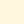 cornsilk |
crimson |
| cyan |
darkblue |
darkbrown |
darkcardinal |
darkcyan |
darkgold |
darkgoldenrod |
 darkgray |
darkgreen |
darkgrey |
darkkhaki |
darkmagenta |
darkolivegreen |
darkorange |
| darkorchid |
darkolive |
darkpeach |
darkpink |
darkpurple |
darkred |
darksalmon |
| darkseagreen |
darkskyblue |
darkslateblue |
darkslategray |
 darkslategrey |
darkturquoise |
darkviolet |
| darkyellow |
deeppink |
deepskyblue |
 dimgray |
dimgrey |
dodgerblue |
firebrick |
| floralwhite |
forestgreen |
fuchsia |
gainsboro |
ghostwhite |
gold |
goldenrod |
| gray |
 grey |
green |
greenyellow |
honeydew |
hotpink |
indianred |
| indigo |
ivory |
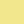 khaki |
lavender |
lavenderblush |
lawngreen |
lemonchiffon |
| lightblue |
lightbrown |
lightcardinal |
lightcoral |
lightcyan |
lightgold |
lightgoldenrodyellow |
 lightgray |
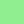 lightgreen |
lightgrey |
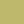 lightolive |
lightorange |
lightpink |
lightpurple |
| lightred |
lightsalmon |
lightseagreen |
lightskyblue |
 lightslategray |
lightslategrey |
lightsteelblue |
| lightteal |
lightviolet |
lightyellow |
lime |
limegreen |
linen |
 magenta |
| maroon |
mediumaquamarine |
mediumblue |
mediumorchid |
mediumpurple |
mediumseagreen |
mediumslateblue |
| mediumspringgreen |
mediumturquoise |
mediumvioletred |
midnightblue |
mintcream |
mistyrose |
moccasin |
| navajowhite |
navy |
oldlace |
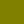 olive |
olivedrab |
orange |
orangered |
| orchid |
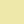 palegoldenrod |
palegreen |
paleturquoise |
palevioletred |
papayawhip |
peach |
| peachpuff |
peru |
pink |
plum |
powderblue |
purple |
red |
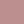 rosybrown |
royalblue |
saddlebrown |
salmon |
sandybrown |
seagreen |
seashell |
| sienna |
silver |
skyblue |
slateblue |
slategray |
 slategrey |
snow |
| springgreen |
steelblue |
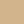 tan |
teal |
thistle |
tomato |
transparent |
| turquoise |
violet |
wheat |
 white |
whitesmoke |
xlightgold |
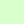 xlightgreen |
| xlightolive |
xlightpink |
xlightpurple |
xlightred |
xlightskyblue |
xlightyellow |
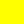 yellow |
| yellowgreen |
| rainbow | 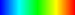 |
| greyscale | |
| bwr | |
| bcwyr | 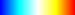 |
| gwr |
| styles | |
| none | |
| solid | |
| dash | |
| dot | |
| dashdot | |
| dashdotdot | |
| widths | |
| 1 | |
| 2 | |
| 3 | |
| 4 | |
| 5 | |
| 6 | |
| 7 | |
| 8 | |
| 9 | |
| 10 |
| 这些内容对您有帮助吗？… 版权与免责声明 | FLAC3D © 2019, Itasca | 原文更新于 2020 年 10 月 8 日 |